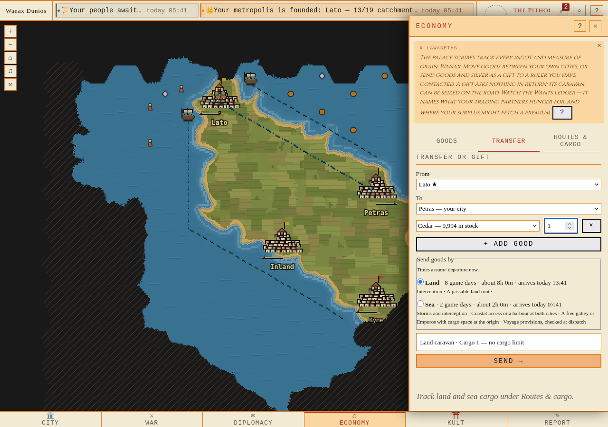
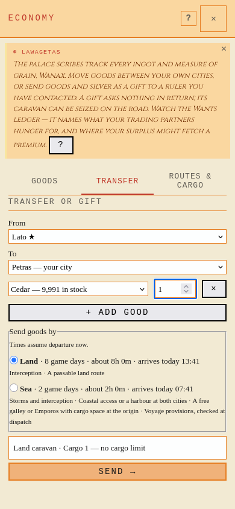
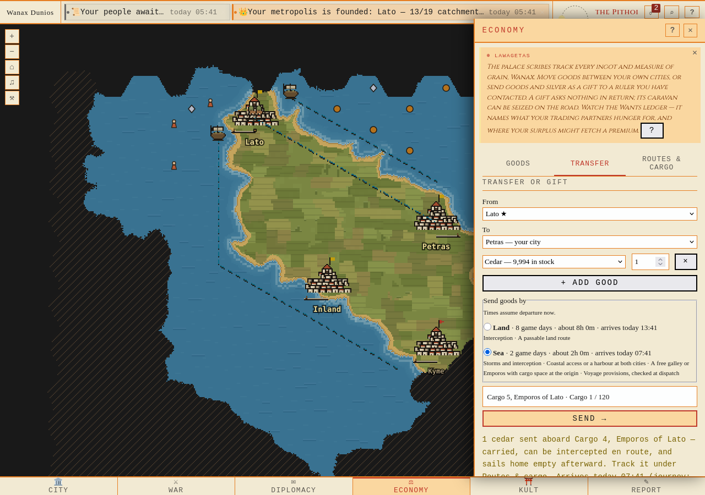
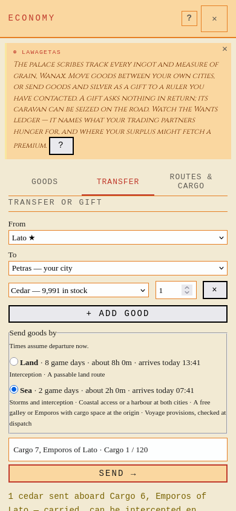
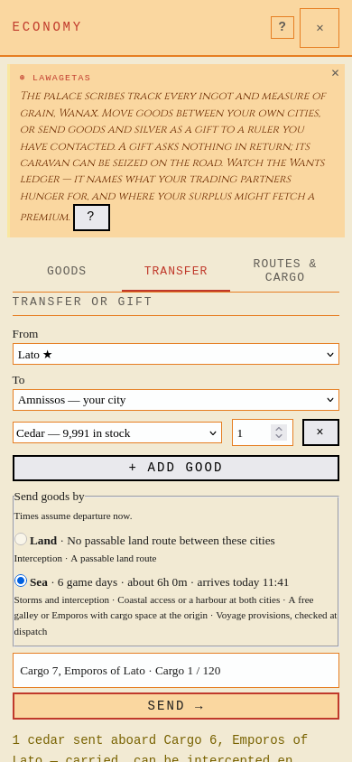
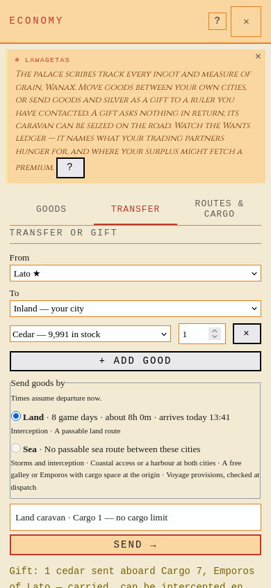
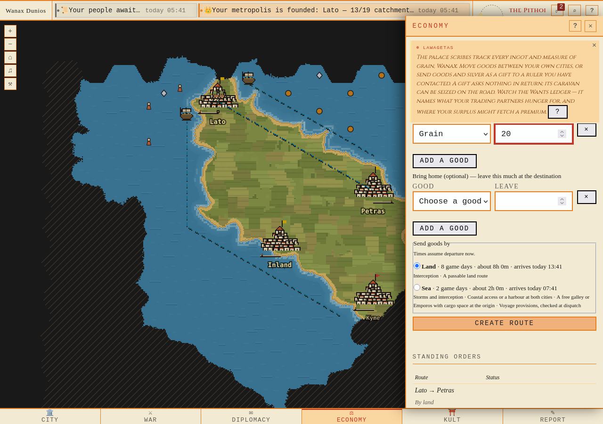
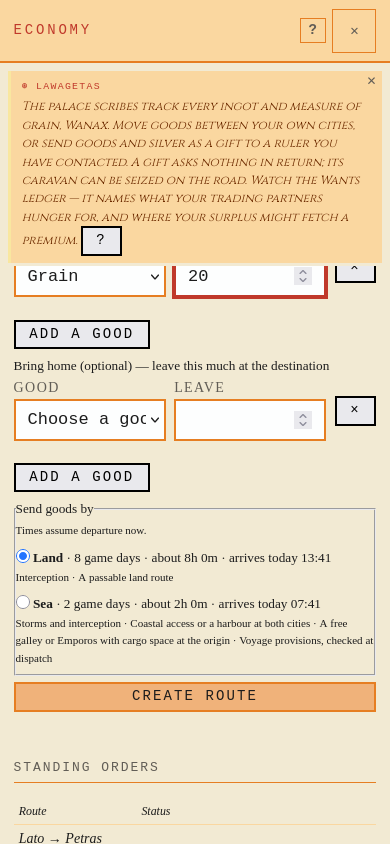
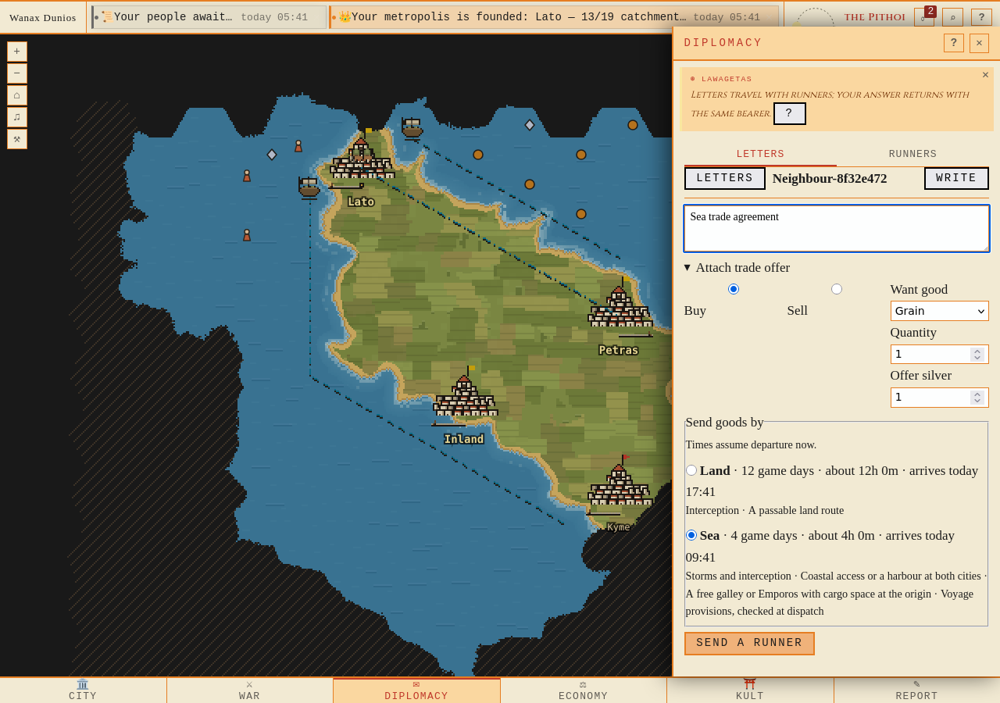
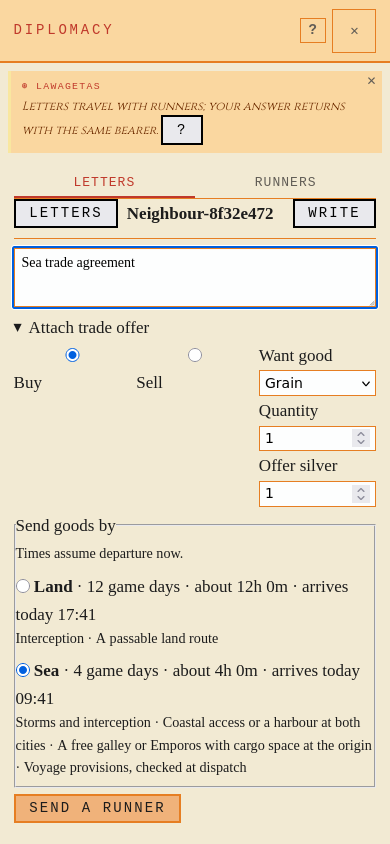

Land or sea · Firefox
Both routes, land selected · 1280px

Both routes, land selected · 390px

Actual sea dispatch · 1280px

Actual sea dispatch · 390px

Sea only with land reason · 1280px
Sea only with land reason · 390px

Land only with sea reason · 1280px
Land only with sea reason · 390px

Saved standing route choice · 1280px

Saved standing route choice · 390px

Choice attached to agreement · 1280px

Choice attached to agreement · 390px
